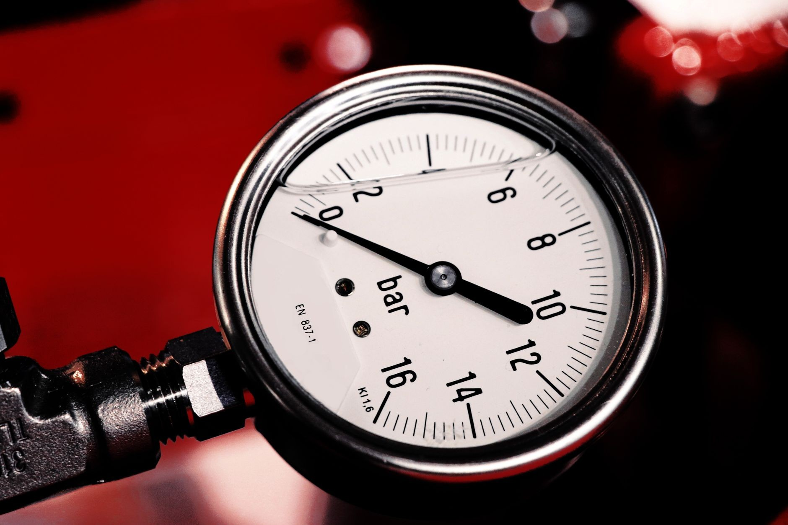
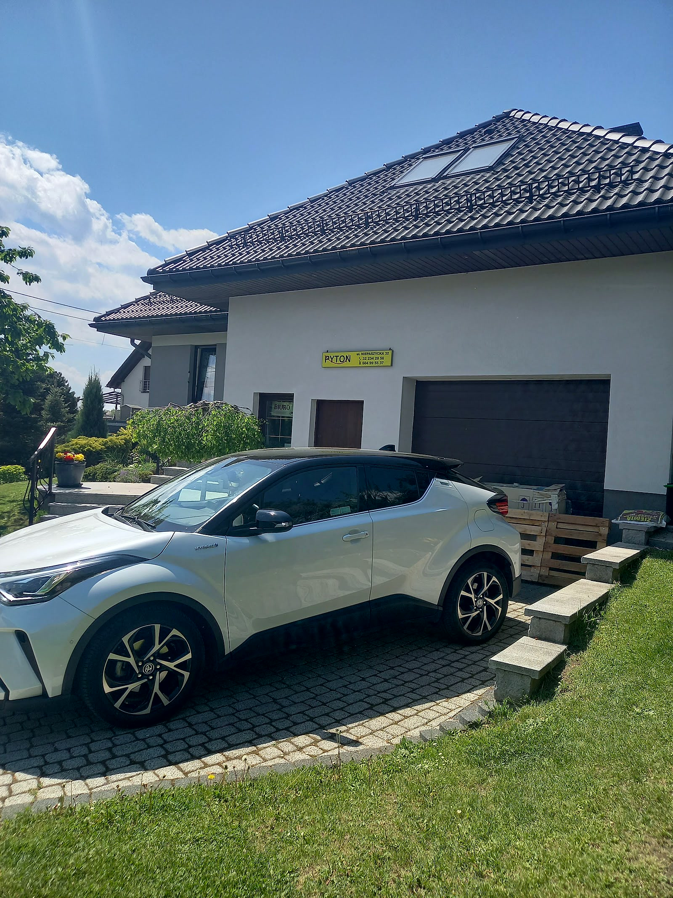
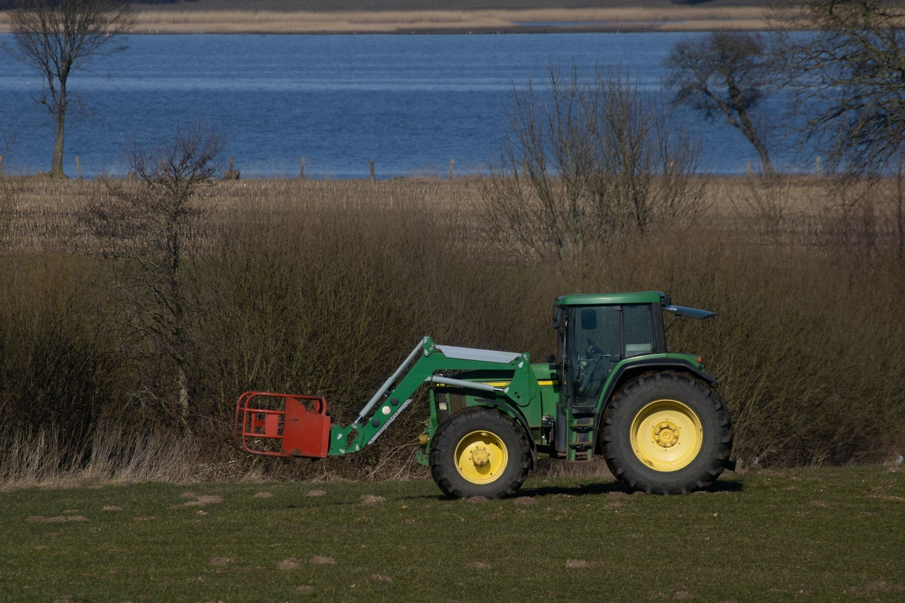
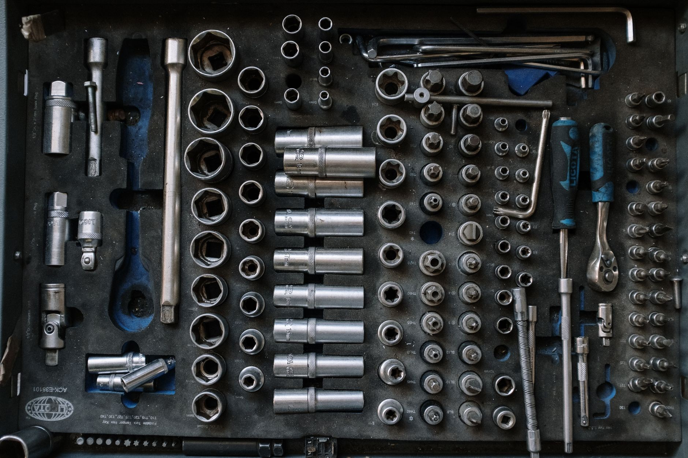

Zakuwanie węży hydraulicznych w Gliwicach-Łabędach
Przywieź uszkodzony przewód do Łabęd - dobierzemy wąż i końcówki, zakujemy i maszyna wraca do pracy. Zadzwoń przed przyjazdem, także po godzinach.
Zadzwoń teraz +48 604 995 537- Przewód na wzór starego
- Także wieczorem, po telefonie
- Łabędy, ul. Niepaszycka 32
Co się dzieje?
Wybierz, z czym przyjedziesz - podpowiemy przez telefon, co zabrać.
„Moge polecic Pan bardzo uprzejmy .otworzył zaklad chociaz byla 19 00 bez marudzenia .cena nie jakaś z kosmo…”Marcin Dietrich
„Polecam zawsze przyjmują klienta nie ważne o której godzinie ceny super i obsługa mila”Iza Kurowska
„Szybko,tanio,profesjonalnie,jako pracownik pogotowia technicznego gorąco polecam.”Dunio


Wiesz, na czym stoisz - na każdym etapie
Od pierwszego telefonu do odbioru roboty - krok po kroku.
- 01
Telefon
Mówisz, jaki przewód padł i do jakiej maszyny - umawiamy, kiedy przyjedziesz.
- 02
Przywozisz stary wąż
Na jego podstawie dobieramy wąż, długość i końcówki.
- 03
Zakucie
Zakuwamy końcówki na miejscu w zakładzie, zwykle od ręki.
- 04
Odbiór
Odbierasz gotowy przewód i wracasz z nim do maszyny.
Przewody, złączki i maszyny
Węże, które zakuwamy, pracują w ciągnikach, koparkach i wózkach widłowych. Zdjęcia poglądowe.





Zakuwanie przewodów hydraulicznych
Z tym przyjeżdżają do nas najczęściej. Cenę zakucia podamy przez telefon.
- Zakuwanie węży wysokociśnieniowychNowy przewód z zakutymi końcówkami - do maszyn rolniczych, budowlanych i wózków widłowych.Wycena →
- Przewód na wzór uszkodzonegoPrzywieź stary wąż - zmierzymy długość, sprawdzimy gwinty i dorobimy taki sam.Wycena →
- Dobór końcówek i złączekDobieramy końcówki pod gniazdo w maszynie. Powiedz, do czego jest przewód, a podpowiemy, która pasuje.Wycena →
- Pilne zakucie po godzinachMaszyna stanęła wieczorem? Zadzwoń - klienci w opiniach piszą, że otwieramy zakład także po 19:00.Wycena →
Co mówią klienci
Moge polecic Pan bardzo uprzejmy .otworzył zaklad chociaz byla 19 00 bez marudzenia .cena nie jakaś z kosmosu kontak telefoniczy Bardzo Dobry .5 gwiazdek z czystym sercem PolecamMarcin Dietrich
Polecam zawsze przyjmują klienta nie ważne o której godzinie ceny super i obsługa milaIza Kurowska
Szybko,tanio,profesjonalnie,jako pracownik pogotowia technicznego gorąco polecam.Dunio
Pękł przewód? Zadzwoń przed przyjazdem.
Powiedz, do jakiej maszyny jest wąż - podamy cenę i umówimy, kiedy przyjedziesz.